|
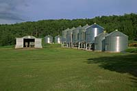 Some wheat is grown on nearly all farms in Saskatchewan, but it is the dominant and sometimes only crop grown on farms in the semi-arid Brown and Dark Brown soil zones. Wheat farms are large, averaging more than 1,000 acres in area. Big machines and modern technology are used to produce high quality wheat efficiently. Most wheat farms in Saskatchewan produce hard red spring wheat. Planted in spring, it grows through the warm summer, and ripens for harvest in early autumn.
Wheat grown on Saskatchewan's rich soils and in our comparatively dry climate is known around the world for its high protein content, and the baking quality of its flour. 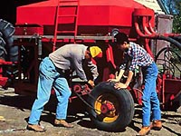 Farmers checking an air-seeder, a machine that tills the soil and plants the crop in a single operation. Seed and fertilizer are stored in the large tank or seed-box, and carried through tubes by strong flows of air to the point where they drop into the soil. Seeds drop behind a cultivator shovel that opens a furrow for the seeds and fertilizer, and slices off any weeds that may be present. Air-seeders allow crops to be planted while retaining the straw or stubble from the previous crop on the soil surface, an important factor in controlling soil erosion.
Cattle are raised on large ranches in the dry, rolling lands of southwestern Saskatchewan, and on mixed farms throughout the farming area. There are also several large feedlot operations that raise several thousand head of cattle per year. Cattle are able to use grass or other forages that grow on land not well-suited to growing cereal, oilseed or pulse crops. 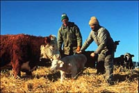 A recently born calf, under the watchful eye of its mother. Cows are good mothers, not only in providing their calves with milk, but also protecting them from possible danger. This calf will stay with its mother from birth until it is weaned at about six months of age. During this time, the calf will increase its weight by about five times. Its growth rate depends on the genes it inherited from its parents, the amount of milk its mother has provided, and the quality of the grass and other food eaten. 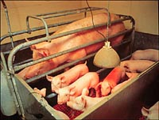 Four to five thousand farms in Saskatchewan raise hogs, with about 200 specialized operations that market more than 1,000 hogs per year. Recently, several large operations are beginning to take shape bringing expertise from eastern Canada and Europe. Farrowing pens, as shown to the right, provide piglets with safe access to their mother.
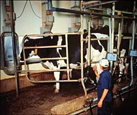 About 600 dairy farms, many with milking parlours as shown here, produce the 100 million litres of fresh milk that are consumed in Saskatchewan each year. An additional 130 million litres of industrial milk are used to make cheese, butter, yogurt, ice cream and other products. Nearly all dairy cows are black and white, and of the Holstein breed. One cow can produce as much as 10,000 litres of milk in a year. 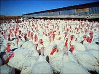 Today, nearly all turkeys and chickens produced in Saskatchewan are grown in their thousands on specialized farms. The birds produced are of breeds that grow quickly and mature at the comparatively low body weights preferred by consumers. A successful turkey farm depends on careful attention to nutrition and health. Among farm animals, poultry are the most efficient converters of grain protein to meat protein for humans to eat. 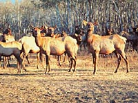
Game farming, such as the raising of elk in enclosed pastures, is a recent development in Saskatchewan, with markets for meat and for the antlers of elk and deer. Antlers are important in several Asian helth remedies.
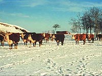
Mixed Farms
Mixed farms produce crops such as wheat or canola, and have livestock, usually cattle or hogs. Mixing grain and livestock production requires a wider variety of equipment, and the farmer is kept busy year-round. Mixed farming enhances economic viability, and permits more varied crop rotations that can improve soil conservation.
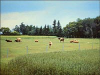 Cattle grazing a pasture between two cropped fields in the northern part of the agricultural area. The Gray soils, which formed there under forest, are usually low in organic matter and nitrogen. Gray soils benefit by growing crops such as alfalfa that are able to add nitrogen to the soil, and from additions of barnyard manure. 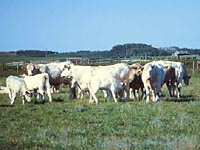
Cows and their calves grazing a rich pasture on a mixed livestock-grain farm. These cattle are all one breed, and are maintained as a pure line to supply breeding stock to other farmers. Farmers or ranchers with commercial herds often cross breed with another to produce more thrifty, and faster-growing calves.
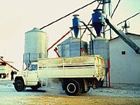 Special Product FarmsNot all farms in Saskatchewan produce grains, oilseeds or cattle. Some farms are specialized operations, producing particular products for limited but important markets. Products from many of these farms are processed within Saskatchewan, in contrast to grains, which are mostly exported.Many farmers are seed growers, producing seed that is certified to be a particular variety. Quality, weed-free seed of adapted varieties is important to the grain-farming sector. The graphic shows a seed cleaning operation. 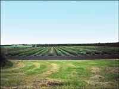 A strawberry orchard is a specialized operation adding diversity to the farm economy. Berry farming uses less land, but input costs and irrigation requirements are greater. Special care is needed to keep the crop free from pests. Early frosts are also a worry. Saskatchewan is of course famous for the "Saskatoon Berry" - a sweet red berry which grows wild as well as being cultivated.
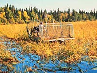 Wild rice grows in shallow, nutrient-rich lakes in the forest region, and has been harvested by Indian people for centuries. Originally the rice (which is really a type of grass) was hand harvested by people in canoes. Being a labour intensive operation, it was difficult for wild rice farmers to make a reasonable living. Modern harvesting machines are part of programs to make wild rice production a commercial enterprise.
|